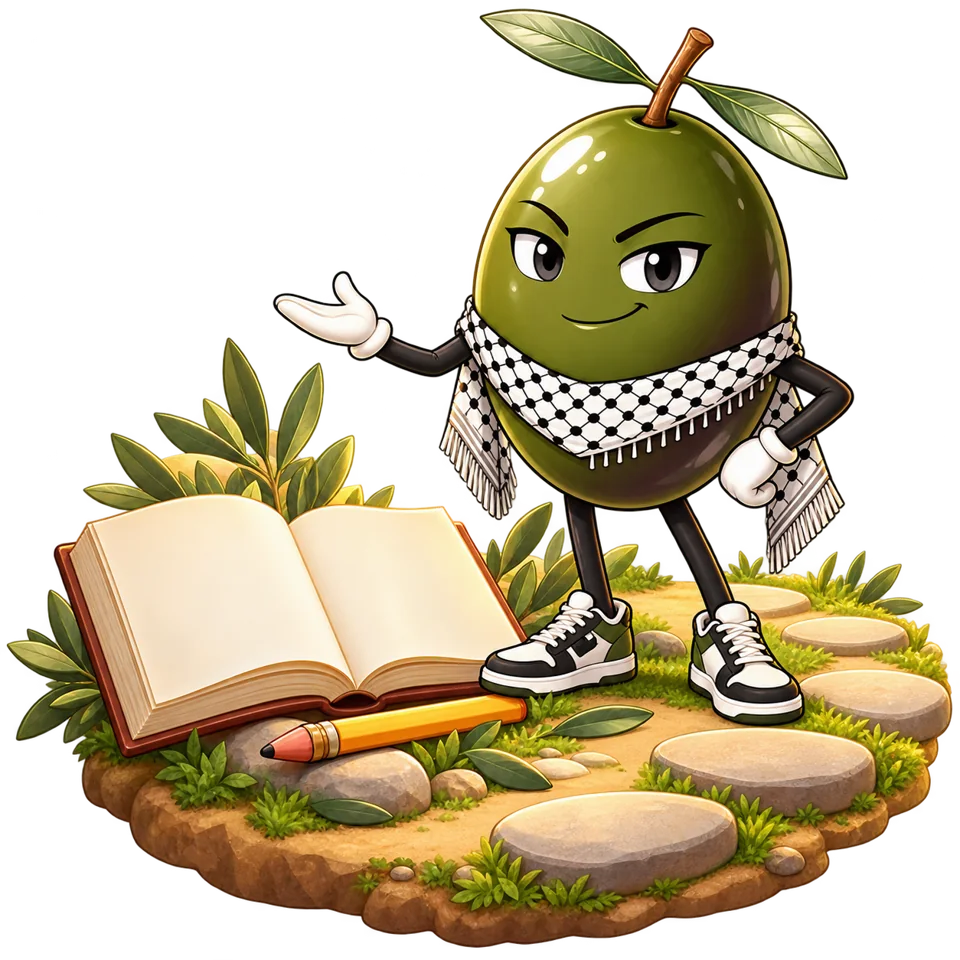
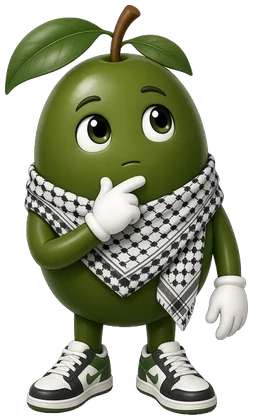
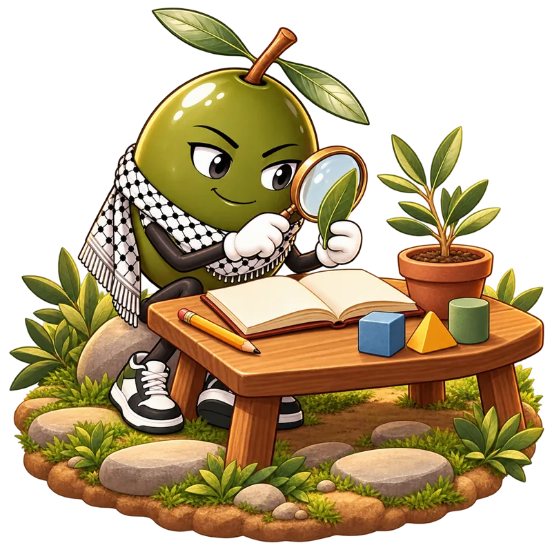

طريق واضح، وسرعتك أنت
تنقّل بين رحلتك والأساسيات والمغامرات والمختبر، وارجع إلى ما تحتاجه.
هنا نفهم، ونجرّب، ونخطئ، ونتعلّم. دروس واضحة وألعاب هادفة، وزيتون يرافقك من أول خطوة.
مجاني · للصفين السادس والثامن · على مهل، وبطريقتك

بستان واحد، وأبواب كثيرة للمعرفة
اختر مادة واكتشف كيف نقترب منها
نبدأ من الأساس، ونربط الرمز برسم واضح، ثم نتدرّب خطوة بخطوة.
جرّب عينة الكسورنربط القراءة بالمعنى، ثم نراجع المفردات والقواعد ونتدرّب عليها.
جرّب عينة الكسورنتعلّم الكلمات في سياقها، ونقرأ الحوار، ونستمع حين يتوفر التسجيل.
جرّب عينة الكسورنلاحظ الرسوم، ونربطها بشرح الدرس، ثم نجرّب الأنشطة المتاحة داخل المادة.
جرّب عينة الكسوررسوم تعريفية لطريقة التعلّم؛ دروس كل صف وتدريباته تجدها داخل المادة.
لا تحتاج أن تعرف كل شيء قبل أن تبدأ.
نبني الأساس، ثم نربط الفكرة، ثم نمنحك مساحة لتجربتها.

راجع المهارة التي تحتاجها، وتأمّل مثالها، ثم اختبر فهمك بهدوء. يمكنك الرجوع إليها متى احتجت.
ابدأ بما تعرفه، واسأل عمّا تحتاجه.
افتح الدرس، واقرأ المثال، وقارنه بصفحة الكتاب المتاحة. كل تمثيل يساعدك على النظر إلى الفكرة من جهة أخرى.
اقرأ، وتأمّل، ثم اشرح الفكرة بكلماتك.
حرّك أدوات النشاط، ولاحظ ما يتغيّر، ثم ارجع إلى شرح الدرس. التجربة فرصة للسؤال، وليست سباقًا.
كل محاولة تفتح سؤالًا جديدًا.ما رأيك أن تجرّب الآن؟
لوّن أجزاء المستطيل واكتشف النصف بنفسك.
المستطيل مقسّم إلى أربعة أجزاء متساوية.
اضغط على الأجزاء التي تريد تلوينها، ثم تحقّق.
اختر أجزاء متساوية، ثم تحقّق من فكرتك.
اختَر مهارة أساسية واقرأ مثالها قبل أن تنتقل. هذه معاينة للمسار؛ لا تُسجّل تقدّمًا.
انتقل إلى شرح الدرس وصفحات الكتاب المتاحة، وخذ وقتك في كل مثال.
تدرّب على الفكرة، واقرأ التغذية الراجعة، ثم أعد المحاولة حين تحتاج.
تنقّل بين رحلتك والأساسيات والمغامرات والمختبر، وارجع إلى ما تحتاجه.
ملف مستقل لكل طالب على الجهاز، وتقرير يساعد على متابعة ما أُنجز وما يحتاج إلى مراجعة.
نزّل دروس المادة مسبقًا من داخلها، ثم افتح المحتوى المحفوظ عندما تنقطع الشبكة.
للطلاب الذين يريدون فهم الدرس والتدرّب عليه بهدوء، بمن فيهم من يحتاج إلى تقوية الأساسيات. تتوفر الآن الرياضيات والعربية والإنجليزية والعلوم والحياة للصفين السادس والثامن.
تُنظّم المواد حول وحدات المنهاج الفلسطيني، مع شروح وأنشطة للتعلّم والمراجعة وصفحات من الكتاب داخل المواد. البستان أداة مساعدة للتعلّم، ويمكن الرجوع إلى الكتاب والمعلم عند الحاجة.
تحتاج إلى الإنترنت عند الزيارة الأولى ولتنزيل المحتوى. بعد تنزيل دروس المادة، يمكنك استعمال المحتوى المحفوظ دون إنترنت على الجهاز والمتصفح نفسيهما.
يُحفظ الآن في المتصفح على هذا الجهاز، ويمكن لولي الأمر تصدير نسخة احتياطية. لا تنتقل البيانات تلقائيًا إلى جهاز آخر حاليًا. احتفظ بنسخة من التقدّم قبل حذف بيانات المتصفح أو تغيير الجهاز.
نعم، يمكنك تجربة نشاط الكسور في هذه الصفحة دون تسجيل. عندما تكون مستعدًا، افتح صفحة الدخول وأنشئ ملفًا مستقلًا ليُحفظ تقدّمك في المواد.
خطوة واحدة تكفي لتبدأ. وزيتون ينتظرك في البستان.
ابدأ رحلتكاختر صفّك ثم مادتك، وزيتون يرافقك في كل خطوة.
من الصف الأول حتى الثاني عشر
اختر الصف أولًا
استعرض الصفحة التعريفية بالبستان
المنهاج الفلسطيني · نضيف صفوفًا ومواد جديدة تباعًا